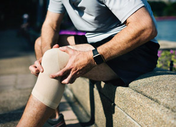

FlagshipRobotic Knee Replacement
Handheld robotic assistance maps your knee in 3D and guides bone preparation to sub-millimetre accuracy — no generic jigs, no guesswork.
- Personalised, patient-specific alignment
- Less soft-tissue trauma, reduced blood loss
- Walking the same or next day in most cases